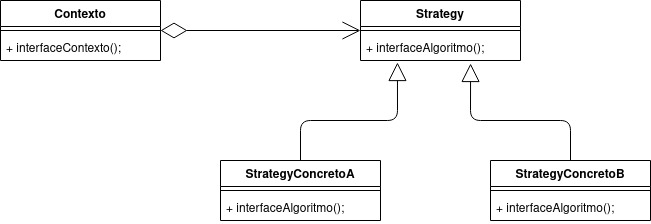
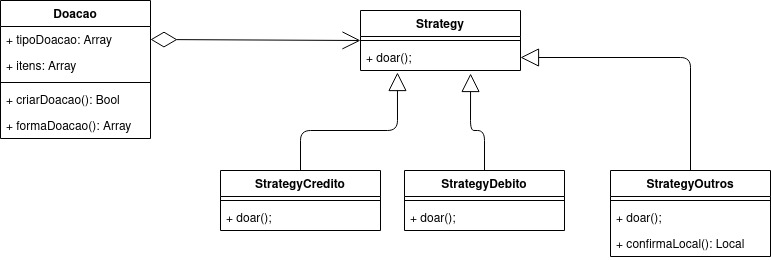

GoFs Comportamentais
O padrões GoFs Comportamentais resumidamente atuam sobre o comportamento das entidades, ou seja, quais são as suas responsabilidades. Não descrevem apenas padrões de objetos ou classes, mas também os padrões de comunicação entre estes.
Strategy
Esse padrão de projeto atribui o comportamento das entidades e garante que seus objetos sejam intercambiáveis. O objetivo é implementar diferentes maneiras de realizar operações e tornar simples a troca entre cada estratégia. Logo, tornando também mais fácil a criação e remoção de estratégias.
Esse padrão é implementado utilizando classes abstratas e/ou interfaces da programação orientada a objetos. A interface relaciona-se com a parte mais abstrata sabendo-se apenas seu contexto, porém ainda não se sabe os detalhes específicos de implementação. Dessa forma, cabe à camada mais concreta, a implementação do método em si, fornecendo uma escalabilidade maior ao produto, permitindo novas soluções para aquele contexto serem facilmente adicionadas ao sistema.
O Strategy geralmente descreve diferentes maneiras de fazer a mesma coisa, permitindo que você troque esses algoritmos dentro de uma única classe contexto. Ele trabalha a nível de objeto, permitindo que você troque os comportamentos durante a execução.
Pontos Positivos
- Aumento da manutebilidade do produto
- Redução do acoplamento das estratégias, podendo muda-las sem alterar a entidade de contexto
Pontos Negativos
- Necessidade de conjuntos de classe para uso em execução
- Vários níveis de abstração podem se fazer necessários em determinados contextos, podendo impactar significativamente a performance da aplicação.
É possível utilizá-lo no projeto?
Visto que o projeto possui diferentes formas de doação, o uso do Strategy pode garantir uniformidade na implementação de cada doação, facilitando o uso de várias estratégias de doações diferentes.
Strategy Base

Strategy Projeto
A nível de modelagem

A nível de código
export class Strategy {
realizarDoacao(tipoDoacao: Array): Void {
tipoDoacao.forEach((tipo) => {
pagamento = null;
switch (tipo) {
case "credito":
pagamento = new StrategyCredito();
case "Outros":
pagamento = new StrategyOutros();
case "Debito":
pagamento = new StategyDebito();
default:
pagamento = null;
}
if (pagamento != null) {
pagamento.doar();
}
});
}
}
export class StrategyCredito(){
doar(){}
}
export class StrategyOutros(){
criarDoacao():Bool{}
confirmarLocal():Local{}
}
Template Method
Esse padrão tenta quebrar o algoritimo que resolve um problema em uma serie de passos a serem concluidos, esses passos se tornam metodos, a serem utilizados, que são chamados dentro de um metodo template.
Com isso podemos resolver o problema que foi descrito de varias maneiras, como por exemplo um pagamento onde pode ser por cartão de credito ou boleto, tem as mesmas etapas mas o que acontece especificamente nos metodos pode ser sobrescrito.
Desse modo o padrão de metodo template, nos permite fazer a reutilização do codigo sem perder o controle do algoritimo.
Pontos Positivos
- Melhor controle de proceços para um certo problema.
- Uma maior facilidade para poder criar uma nova forma de solucionar um certo problema.
- Reutilização de codigo ja escrito.
Pontos Negativos
- A aplicação desse padrão é muito ligada á processos que pode ter varias soluções, não sendo um padrão generalizado.
- Os passos do processo a ser solucionado tem que ser previamente conhecido para que esse padrão possa ser aplicado.
É possível utilizá-lo no projeto?
É possível sua utilização no projeto, visto que temos diferentes formas de doação, dessa forma com o uso do template method podemos definir diferentes formas de doação.
Template Method Base
Template Method Projeto
A nível de modelagem
A nível de código
export class Doacao{
constructor(){
if (this.constructor === Doacao) {
throw new Error("Não pode instanciar uma classe abstrata.");
}
}
doarDinheiro():Void{
pagar()
}
pagar():Void {}
}
export class DoacaoPorPix extends Doacao{
pagar():Bool{
// Pagamento por Pix
}
}
export class DoacaoPorBoleto extends Doacao{
pagar():Bool{
// Pagamento com Boleto
}
}
Mediator
O Mediator é um padrão de projeto muito interessante, e que se assemelha bastante com o padrão Facade, porém a diferença entre ambos é que o Mediator não só delega as classes ele faz a mediação entre elas, ou seja, ele é o responsável por estabelecer a comunicação entre dois objetos.
Pontos Positivos
- Se pode extrais a comunicação entre diversos objetos e varios componentes em um so lugar.
- Reduz o acoplamento entre varios componentes do projeto.
- Se pode reutilizar componentes individuais de forma mais facil.
Pontos Negativos
- Pode afetar o desempenho do projeto, visto que é necessário uma nova classe para estabelecer uma comunicação entre dois objetos
- Pode acabar se tornando um objeto deus, onde ele sabe de tudo e controla muito.
É possível utilizá-lo no projeto?
Acredito que não, visto que as classes utilizadas são simples.
Mediator Base
Versionamentos
| Data | Versão | Descrição | Autor |
|---|---|---|---|
| 09/09/2021 | 0.1 | Criação do documento | Pedro Vítor de Salles Cella |
| 11/09/2021 | 0.2 | Adição do Padrão Template Method | Paulo Gonçalves Lima |
| 11/09/2021 | 0.3 | Adição do Padrão Mediator | Paulo Gonçalves Lima, Pedro Vítor de Salles Cella |
| 16/09/2021 | 0.4 | Revisão, correções ortográficas e ajuste de conteúdo do padrão Strategy | Júlio César Schneider, Sara Campos, Edvan Gomes |
| 16/09/2021 | 0.4.1 | Revisão textual e de formatação do documento | Arthur Sena e Gabriela Pivetta |
| 19/09/2021 | 0.5 | Adicionado o nivel de codigo para os padrões Strategy e template method | Paulo Gonçalves Lima, Pedro Vítor de Salles Cella |
Referências
- SERRANO, Milene. Vídeo aulas sobre Padrões de Projeto. Último acesso em 16/09/2021.
- Wikipedia, Strategy
- Wikipedia, Mediator
- Grupo Stock
- Macoratti, Strategy
- Refactoring Guru, Template Method
- Refactoring Guru, Mediator